Elopement
Ustedes dos, el destino y yo. Media jornada de cobertura, caminata hasta el punto elegido y sesión con la mejor luz del día.
- Media jornada
- Galería digital
- Adelanto en pocos días
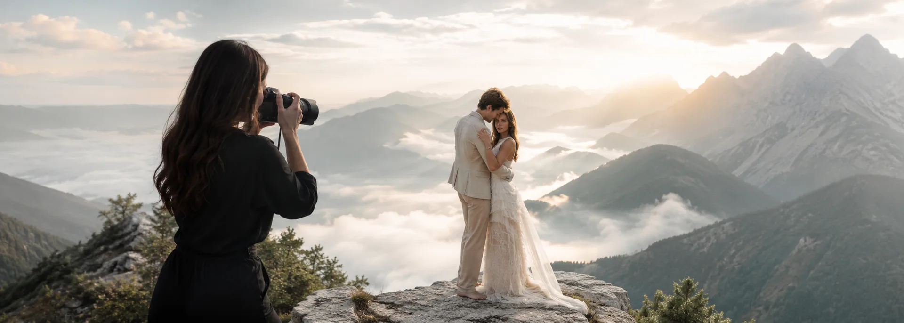
Fotografía a destino
Bodas, elopements y sesiones de pareja donde el paisaje también entra en el retrato. Salgo desde Villa María y llego a donde estén.
Manifiesto
Una foto en un salón se parece a cualquier otra foto en un salón. Una foto con el mar golpeando abajo, o con el sol saliendo sobre un salar, no se repite nunca. Por eso trabajo a destino: porque el lugar que eligieron también tiene algo para decir.
01 — El itinerario
Estos son los escenarios donde una sesión a destino rinde distinto. Si tenés otro en la cabeza, lo armamos igual.
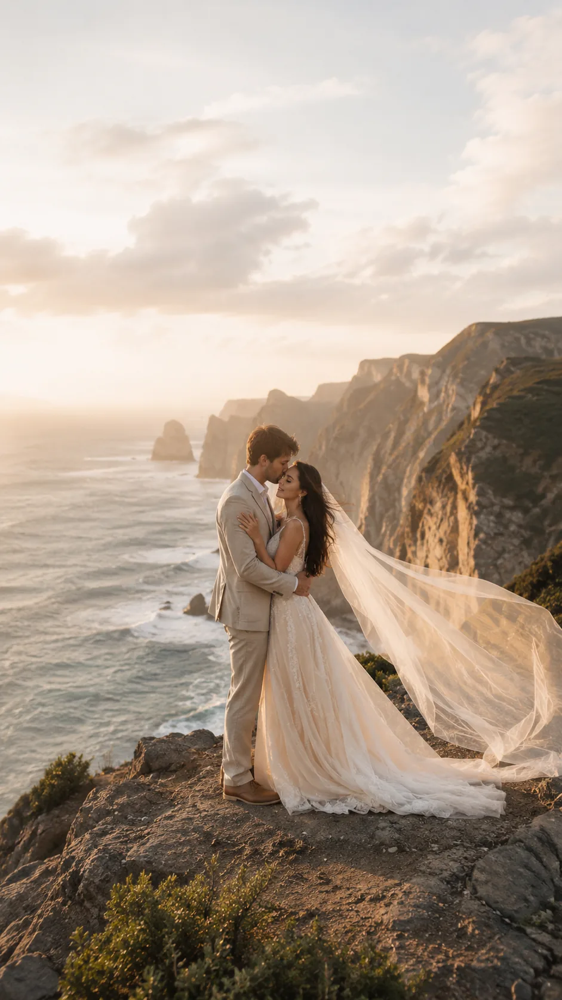
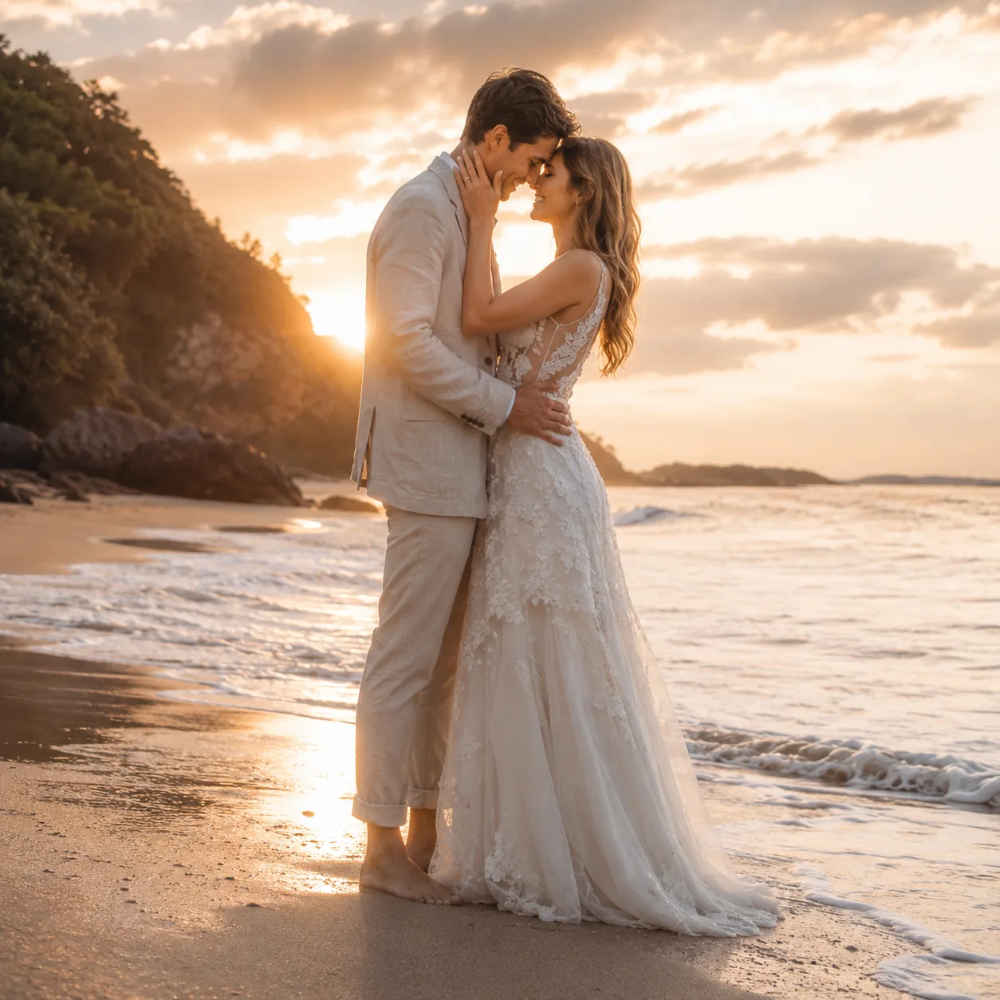
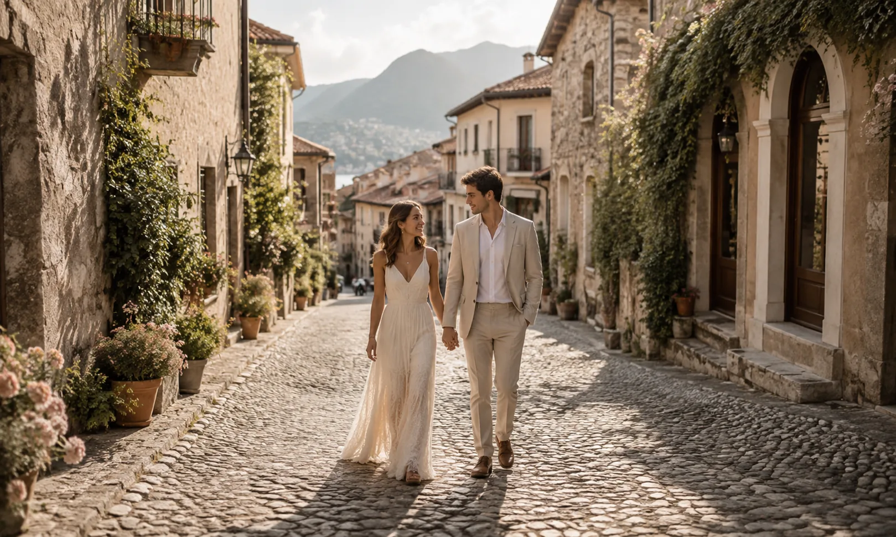
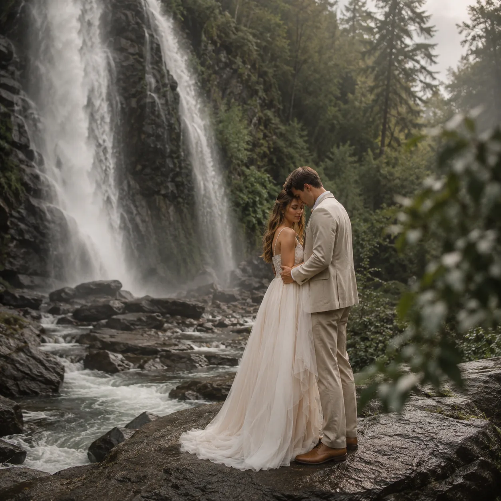
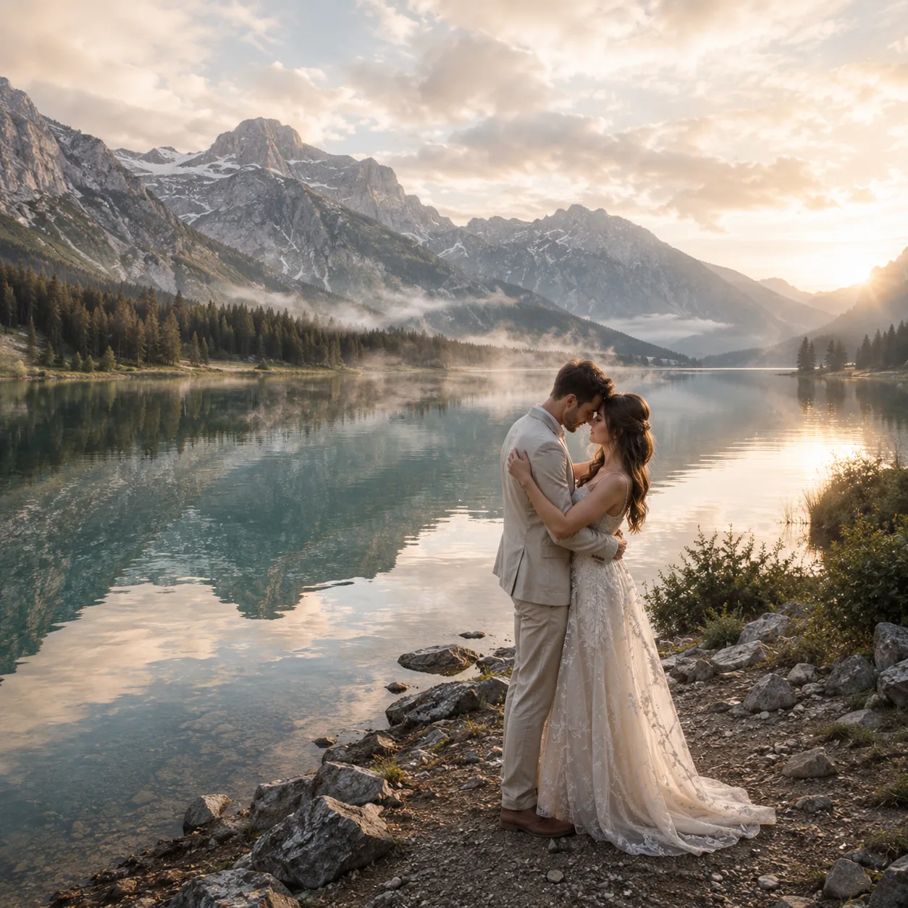
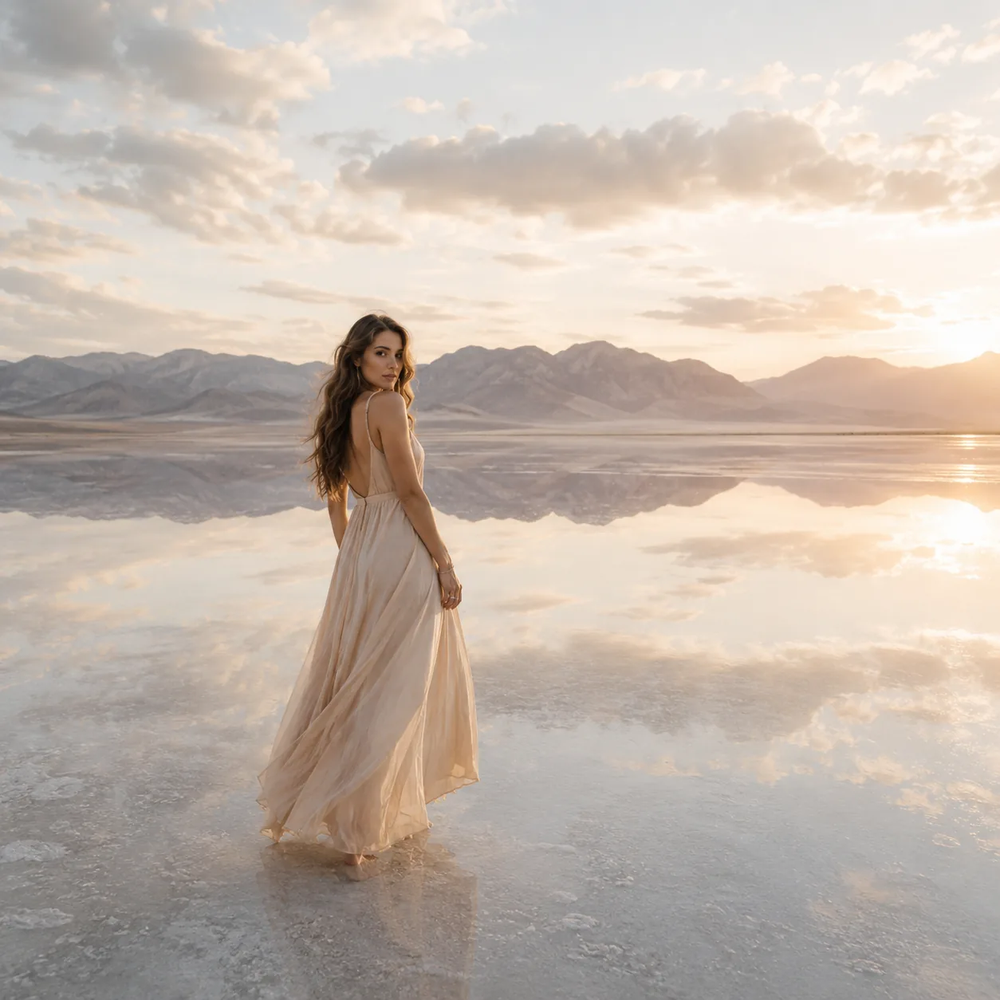
Viento, altura y la hora dorada pegando de costado. Para parejas que no le tienen miedo al drama.
El sol tocando el agua y la arena devolviendo luz. La opción más cálida y la más fácil de coordinar.
Calles angostas, luz rebotada entre paredes y detalles por todos lados. Ideal para sesiones largas y caminadas.
Verde profundo, agua en movimiento y luz filtrada. Requiere caminata y calzado cómodo, pero vale cada paso.
El agua quieta como espejo y los picos atrás. El escenario más buscado para elopements.
Horizonte infinito y reflejo perfecto. Hay que madrugar de verdad, y por eso casi nadie tiene estas fotos.
02 — Galería
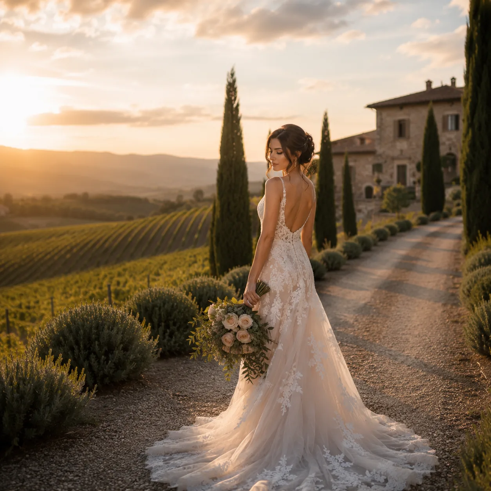
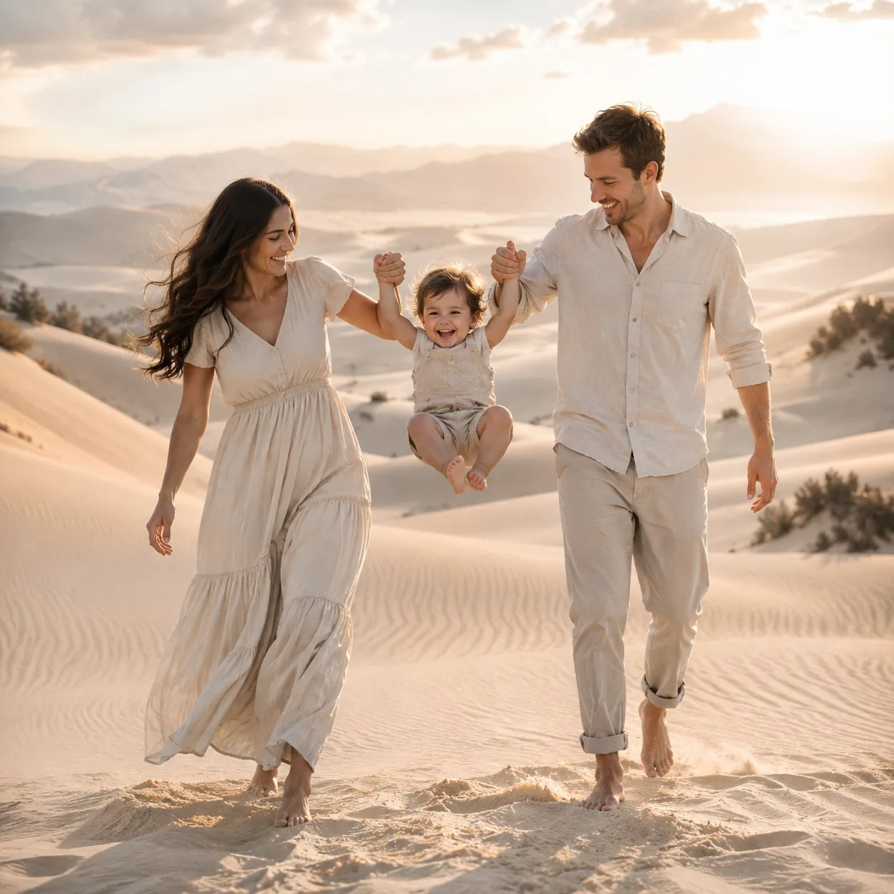
03 — Cómo trabajamos
Fecha, destino y qué tipo de sesión tenés en la cabeza. Si todavía no elegiste el lugar, te tiro opciones según la época del año.
Con el destino definido calculo viaje y estadía, y te paso todo detallado por escrito antes de que reserves nada.
Elegimos horarios según el amanecer y el atardecer del lugar, y dejamos un plan B por si el clima cambia.
Llego con tiempo para reconocer el lugar. Después te mando un adelanto en pocos días y la galería completa cuando esté editada.
04 — Quién viaja
Hago fotos de casamientos hace años y en algún momento me di cuenta de que las que más me gustaban eran siempre las que estaban lejos de un salón. Así que armé el trabajo alrededor de eso: viajar liviana, caminar hasta donde haga falta y volver con imágenes que no se parecen a las de nadie.
Trabajo sola o con asistente según el tamaño de la sesión, con equipo propio y respaldo de material desde el mismo día. Base en Villa María, Córdoba; el resto lo decidís vos.
Contame tu idea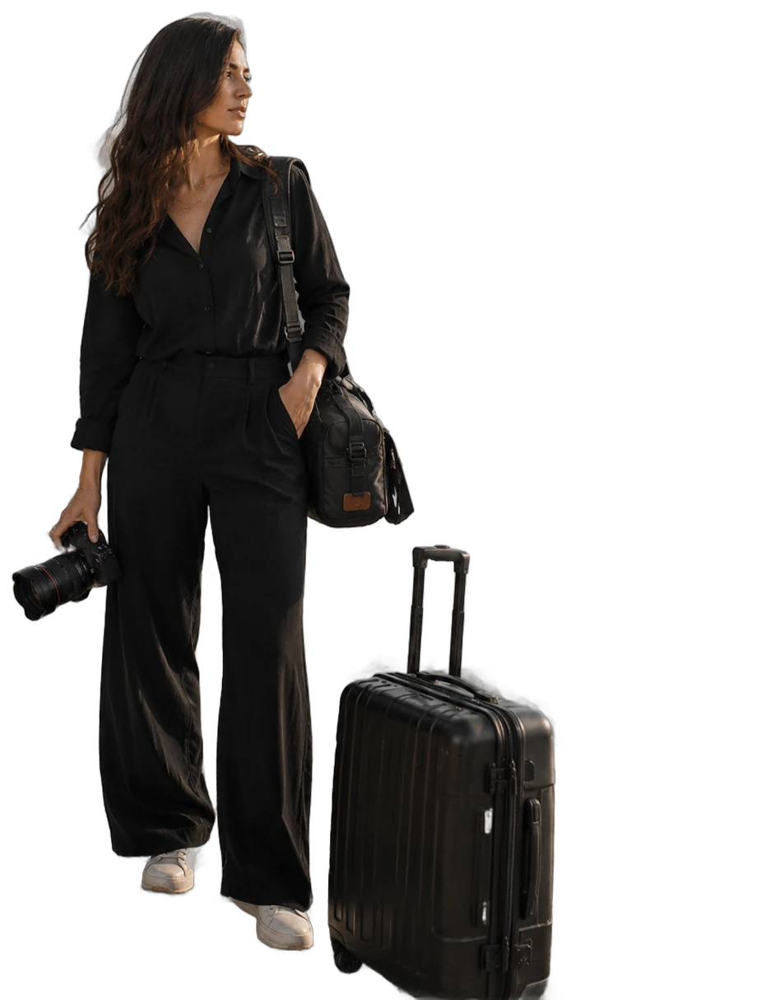
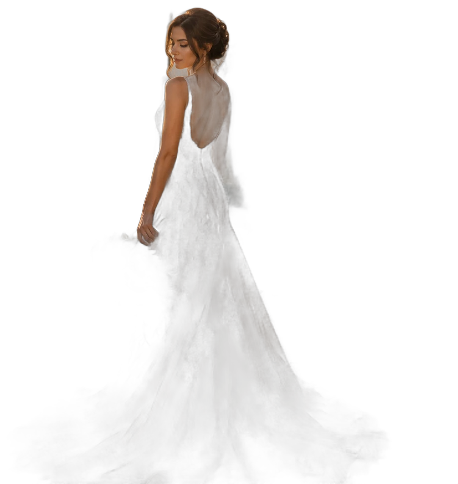
05 — Experiencias
Cada sesión a destino se cotiza según el lugar, los días y el viaje. Escribime con tu fecha y te paso el presupuesto detallado.
Ustedes dos, el destino y yo. Media jornada de cobertura, caminata hasta el punto elegido y sesión con la mejor luz del día.
Cobertura completa del día, desde los preparativos hasta la fiesta, con una sesión aparte en el paisaje que elijan.
Sesión de una o dos horas en el destino que estén visitando. Ideal para aniversarios, lunas de miel o viajes en familia.
Lo que dicen
Nos casamos solos frente al mar y pensábamos que no íbamos a tener registro de nada. Las fotos son lo único material que nos quedó de ese día y las miramos todo el tiempo.
Camila y Nico · acantilado costero
Nos hizo caminar dos horas para llegar al lago y valió cada minuto. Además nos organizó los horarios para no perdernos el amanecer.
Fer y Juli · lago de montaña
Viajó hasta el pueblo donde nos conocimos y sacó fotos de lugares que pasamos mil veces sin mirar. Nos devolvió el sitio con otros ojos.
Aye y Martín · pueblo de piedra
Preguntas
Sí. Trabajo con base en Villa María, Córdoba, y viajo a donde sea la sesión, dentro del país o afuera. Los costos de viaje se calculan según el destino y se detallan en el presupuesto antes de reservar.
Para una boda a destino conviene reservar con varios meses de anticipación, porque implica coordinar vuelos y estadía. Para sesiones de pareja o familia el plazo es bastante más corto. Escribime con la fecha y te confirmo disponibilidad.
Se trabaja igual: la luz difusa de un día nublado suele ser hermosa para retrato. Si el clima impide salir, coordinamos una alternativa dentro del mismo viaje.
Primero te mando un adelanto con algunas imágenes editadas a los pocos días, y la galería completa se entrega por descarga digital según lo acordado en el presupuesto.
Sí, y es de mis formatos preferidos. Muchas parejas se casan por civil o por iglesia en su ciudad y hacen la sesión de fotos después, en el destino que quieran, sin la presión del día del evento.
06 — Escribime
Respondo por WhatsApp, que es lo más rápido. Si preferís dejarme los datos acá, también llega.
353 414-8365Base en Villa María, Córdoba · Viajo a todo el país y al exterior